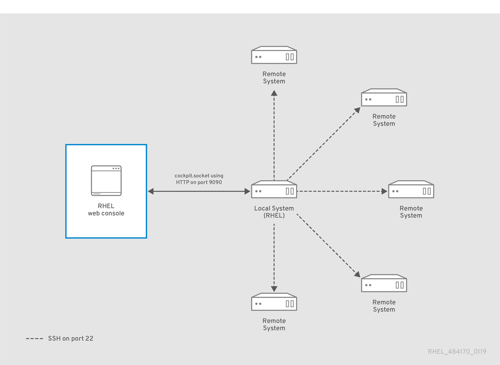
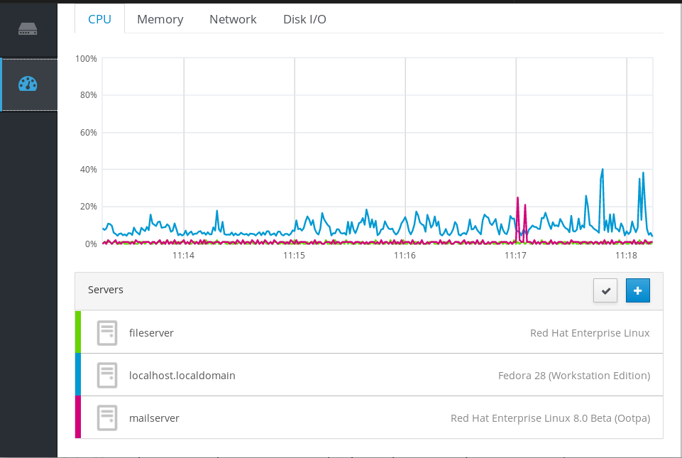
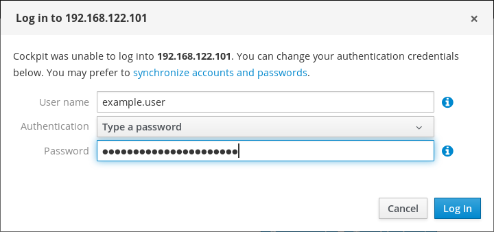
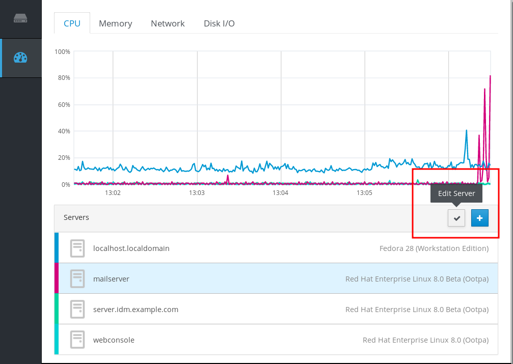
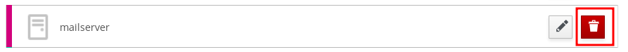
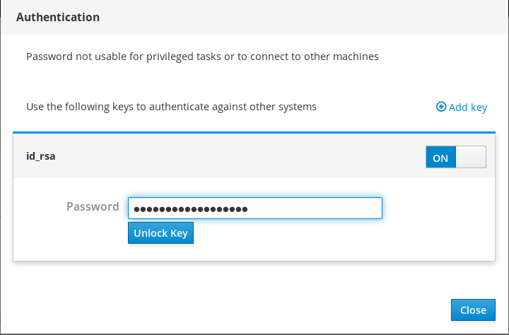

Chapter 9. 在Web控制台中管理远程系统
RHEL 8 Web控制台可以连接到远程系统并通过用户友好的Web界面进行管理。以下章节描述：
- 连通系统的最佳拓扑结构。
- 什么是仪表板。
- 如何添加和删除远程系统。
- 何时，为何以及如何使用SSH密钥进行远程系统身份验证。
使用RHEL 8 Web控制台管理网络中的远程系统需要考虑连接服务器的拓扑。
为获得最佳安全性，Red Hat建议采用以下连接设置：
- 将一个系统与Web控制台一起用作堡垒主机。堡垒主机是一个打开HTTPS端口的系统。
- 所有其他系统通过SSH进行通信。
通过在堡垒主机上运行Web界面，您可以使用默认配置中的端口22通过SSH协议访问所有其他系统。

本节帮助您使用用户名和密码将其他系统连接到Web控制台中的仪表板。
仪表板是专为远程服务器管理而设计的工具，您可以在其中添加，连接或删除远程系统。
仪表板显示每个远程系统的图形和状态。
您可以在仪表板中添加最多20个远程系统。

先决条件
安装在Web界面运行的系统中的
cockpit-dashboard包：$ sudo yum install cockpit-dashboard
cockpit-dashboard包通过远程系统管理扩展了RHEL 8 Web控制台。您需要使用管理权限登录Web控制台。
有关详细信息，请参阅登录Web控制台 。
程序
- 在RHEL 8 Web控制台中，转到仪表板 。
在仪表板中 ，单击“ 添加服务器”图标。

- 在“ 将计算机添加到仪表板”对话框中，输入远程系统的主机名或IP地址。
- （可选）单击“ 颜色”字段以更改仪表板中系统的颜色。
- 单击添加 。
在“ 登录到<servername>”对话框中，输入远程系统的凭据。
您可以使用远程系统的任何用户帐户。但是，如果您使用没有管理权限的用户帐户的凭据，您将无法执行管理任务。
如果使用与本地系统相同的凭据，则Web控制台将在每次登录时自动对远程系统进行身份验证。但是，在更多计算机上使用相同的凭据可能存在潜在的安全风险。

- 单击“ 登录” 。
如果登录成功，仪表板会在列表中添加新项目。要验证连接，请单击系统以查看Web控制台中的所有详细信息。
注意
Web控制台不会保存用于登录远程系统的密码，这意味着您必须在每次系统重新启动后再次登录。要打开登录对话框，请单击断开连接的远程系统主屏幕上的“ 疑难解答”按钮。

本节将指导您从位于Web控制台中的仪表板中删除其他系统。
先决条件
cockpit-dashboard包安装在运行Web界面的系统中。远程系统添加。
有关详细信息，请参阅使用Web控制台添加远程系统 。
您必须使用管理员权限登录Web控制台。
有关详细信息，请参阅登录Web控制台 。
程序
- 登录RHEL 8 Web控制台。
- 单击仪表板 。
单击“ 编辑服务器”图标。

要从仪表板中删除服务器，请单击红色的“ 删除”图标。

因此，服务器将从仪表板中删除。
RHEL 8 Web控制台支持使用SSH密钥进行身份验证。这具有以下优点：
- 提高服务器之间通信的安全性。
- 避免重复输入凭据。
重要
使用SSH密钥仅适用于只读访问或无密码sudo，因为身份验证在没有密码的情况下进行。要执行管理任务，请使用具有管理权限的系统帐户凭据。
要在Web控制台中使用SSH密钥配置身份验证：
- 将公钥复制到连接的远程系统中。
- 设置运行RHEL 8 Web控制台的系统中私钥的路径。
- 从Web控制台注销并再次登录以确保更改身份验证。
先决条件
SSH密钥存储在系统中，运行Web控制台。如果您没有，请使用以下命令：
$ ssh-keygen
- 生成的SSH密钥的密码。
~/.ssh/id_rsa.pub文件的内容复制到剪贴板中。
程序
要将公共SSH密钥复制到远程系统：
- 打开Web控制台。
- 单击仪表板 。
- 选择要添加公钥的远程系统。
- 在系统设置中，转到“ 帐户” 。
- 选择要为其分配公钥的用户帐户。
在“ 授权的公共SSH密钥”设置中，单击“ +”按钮。

- 在“ 添加公钥”对话框中，粘贴剪贴板中的公钥。
- 单击“ 添加”键 。
此时，您可以看到分配给用户帐户的新公钥。

要设置私有SSH密钥的路径：
- 转到右上角设置。
在下拉菜单中，选择“ 身份验证” 。

验证Web控制台是否使用了要使用的私钥的正确路径。
默认情况下，Web控制台对私钥使用以下路径：
~/.ssh/id_rsa ~/.ssh/id_dsa ~/.ssh/id_ed25519 ~/.ssh/id_ecdsa
要使用其他密钥，请手动添加路径。
使用开/关按钮启用该键。
启用该密钥将打开密码对话框。
输入SSH密钥密码。

单击解锁密钥 。
在“ 详细信息”选项卡上，您可以验证证书所有者和指纹。
- 单击关闭 。
RHEL 8 Web控制台现在使用两侧的SSH密钥。但是，系统仍使用原始凭据。
要更改身份验证设置：
从Web控制台退出。
在Web控制台中重新登录后，远程系统之前会出现红色三角形图标。
单击尝试连接到Web控制台的系统。
您可以在屏幕上看到两个按钮。重新连接并排除故障 。
单击“ 疑难解答”按钮。
出现登录对话框。

- 在“ 身份验证”下拉菜单中，选择“ 使用可用凭据” 。
Web控制台创建使用SSH密钥保护的新连接。它适用于Web控制台登录以及终端访问。